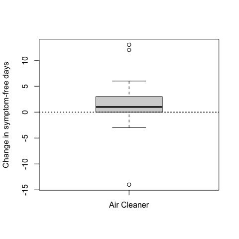
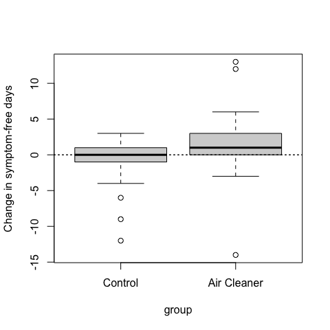
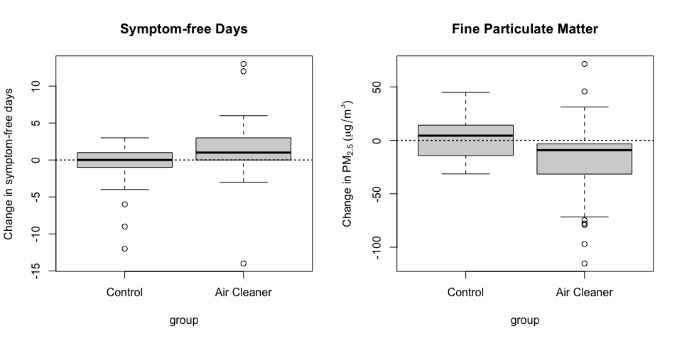

~ sum(is.na(.))~sum(is.na(.))Exploratory data analysis (EDA) was first formally introduced by Tukey (1977) in his influential 1977 book, Exploratory Data Analysis. Since then, its importance has grown significantly, especially in recent years, for several key reasons: i) data is being produced faster and in larger volumes than ever before, ii) modern computing and software tools make it easier to explore, clean, and visualize data in meaningful ways, iii) contemporary statistical models are often complex and assumption-dependent, requiring us to thoroughly understand the data before applying formal techniques. (Midway 2022)
The EDA may not be fully described in concrete terms, but most data analysts and statisticians know it when they see it.
The EDA is important because it helps researchers make thoughtful decisions about which ideas are worth exploring. Sometimes, the data clearly show that a particular question does not have enough support to be studied further—at least not with the current evidence.
The main goals of EDA are:
To suggest hypotheses about what might be causing the patterns or relationships observed in the data,
To guide the choice of appropriate statistical tools or models by helping you understand the structure of the data,
To assess key assumptions that must be checked before applying formal statistical analysis (e.g., linearity, normality, independence),
To provide a basis for further data collection, by highlighting gaps, inconsistencies, or areas where more information is needed.
EDA is not typically the final stage of analysis. Rather, it serves as a transitional step between raw data and formal modeling. The insights gained through EDA guide decisions about which models to use, which variables to consider, and which data issues to address.
Roger D. Peng in his book (Peng 2012) provide this checklist for conducting EDA.
Start with a clear question: Before you begin EDA, take time to define exactly what you want to find out. A clear question or hypothesis gives your analysis purpose and helps you stay focused along the way.
Load your data carefully: Make sure your dataset is fully and correctly loaded into your analysis tool (e.g., R or Python). This first step is essential—it sets the stage for everything you will do next.
Take a first look at the data: Check that the file type, structure, and layout are what you expected. Make sure everything is organized in a way that works for your analysis.
Use str() to Peek Inside the Dataset: In R, it will get a quick summary: number of observations (rows), number and names of variables (columns), variable types (e.g., numeric, character, factor), and a preview of the data values
Look at the Beginning and End of Your Data: Use functions such as head() and tail() to view the first and last few rows. This visual check can help to detect issues such as incorrect headers, blank rows, or unusual formatting.
Check the Number of Rows (“n”): Make sure to verify how many observations (rows) are in your dataset. Compare this to what you expected from the original. source. If the number is too high or too low, there may be missing values, duplicate entries, or extra rows (e.g. duplicates or blank lines).
Validate with an External Source: When possible, compare part of your dataset with a trusted external source, such as official statistics or published reports. This helps confirm the accuracy and reliability of your data.
Try the Simple Solution First: Start by basic methods–such as summaries, tables, or visualizations– to explore and answer your question. Simple tools can often reveal key patterns or issues. Use more complex techniques only of necessary.
Challenge Your Findings: Once you find a result, pause and ask yourself: Does this make sense? Check your assumptions and consider possible errors or missing information. Being critical helps make your results stronger and more trustworthy.
Decide What to Do Next: Use the insights from your EDA to guide your next steps. You may decide to collect more data, use new methods, or refine your question. Sometimes , your initial findings are already enough to answer your main question.
In Chapter 4 of Midway (2022), interested reader can find some comments for each step.
EDA is the single most important task to conduct at the beginning of every data science project.
EDA is like exploring a new place – you do not know what you will find until you start looking.
We will explore the airquality dataset, which contains daily measurement of air pollutants and weather conditions in New York City May to September 1973.
Step 1 – How do ozone levels vary across different months in New York during the summer in 1973?
This question is specific and focused: One location (New York), One variable (ozone), one year and a defined time window (May to September)
Step 2 – The airquality dataset is built into R. Load it with:
Step 3 – Check the size and dimension of the dataset
Step 4 – run str()
There are some missing values (NA , Not Available) in the dataset.
Step 5 –
Step 6 –
First, we count how many rows (i.e., records or observations) are in the dataset.
Missing values (denoted as NA in R) can lead to incorrect calculations or unexpected results. It is good practice to check how many missing values there are per variable.
This command uses across() to apply the same function to all columns, and sum(is.na(.)) to count the number of missing values per column.
The ~ introduces an anonymous function — a function written inline without a name.
This
~ sum(is.na(.))~sum(is.na(.))is a shorthand for
function(x) sum(is.na(x))function (x)
sum(is.na(x))Or, we can check how many rows are from July:
check how many missing values are just in August.
Step 7 – According to the U.S. EPA, ozone levels above 70 parts per billion (ppb) may be considered unhealthy.
Based on the output, many days have safe levels and some days have extremely high ozone levels.
Step 8 – Let us check the average ozone level by month:
This gives a quick overview of how ozone levels change over the summer. Let visualize it:
Based on the plot, we observe that July and August have the highest median ozone levels, showing that typical ozone concentrations were significantly higher during mid-summer. This suggests a seasonal pattern, likely driven by higher temperatures and increased sunlight, which promote the formation of ozone. The taller boxes and whiskers for these months reflect a greater variability in ozone levels, including several high outliers. In contrast, May and September show lower median values and less variation, possibly due to cooler temperatures and different atmospheric conditions. The median ozone level is June is slightly higher than in May but lower than in July, with a moderate level of variability. Overall, this seasonal trend is consistent with environmental science – ozone forms more easily in strong sunlight and warm conditions, which are more prevalent in July and August.
Step 9 – Let us examine whether temperature or wind speed might help explain ozone patterns.
You may observe that there is a positive relationship between temperature and ozone and a negative relationship between wind speed and ozone. These patterns support common environmental science findings.
Step 10 – Based on our findings, we might fit a simple regression model
We might also refine our question: On which days was the ozone level unusually high, and what were the weather conditions on those days?
Step 1 – Which weather factor—temperature, wind, or solar radiation—has the strongest relationship with ozone levels during the summer of 1973 in New York?
This question is more analytical than descriptive, and focused on relationships between variables. So, we need to examine how ozone changes with respect to other variables.
Step 2 –
Step 3 –
Step 4 –
Step 5 –
Step 6 –
Step 7 –
Check how often ozone exceeds EPA’s 70 ppb guideline:
Step 8 –
Since dplyr does not include a cor() function, we will compute correlations manually using summarise() and cor() from base R, keeping within tidy pipelines:
More advanced:
But sometimes, a simple code gives the more informative output:
visualize the relationships:
Step 9 –
When we check p-values and coefficients, we see Temp has strong and significant positive effect, Wind has strong and significant negative effect, and Solar.R has weaker effect but still contributes.
Step 10 –
Now we know temperature has the strongest effect on ozone levels:
Should we check for nonlinear effects (e.g., does ozone spike at high temps)?
Would a time-based model (e.g. by day or month) add insight?
What is the temperature threshold where ozone exceeds 70 ppb?
Are there interactions between variables (e.g. high temp + low wind)?
Do results change if the we include time (e.g. month)?
We might now refine our question: How much does temperature need to rise before ozone levels exceed the 70 ppb threshold?
As Tukey emphasized, EDA is about “detecting the unexpected” and learning from the data before attempting to explain it.
At the beginning, it is hard to ask the perfect question because you do not know the date well yet. But here is the secret:
Each time you explore one idea, it leads to a new question. That is how you:
Discover patterns
Notice surprises
Understand your data more deeply
Good EDA is like this
Ask a question
Make a plot or summary
Look at the result
Ask a new, better question
Repeat!
Do not wait for the perfect question - just start. Exploration will lead you to insight.
Based on (Tufte 2006), there are six key principles for designing informative and effective graphs.
Good data analysis always involves comparing things. A single number or result doesn’t mean much on its own. We need to ask:
For example, if we see that children with air cleaners had more symptom-free days, that sounds good. But how do we know the air cleaner made the difference? We only know that by comparing to another group of children who didn’t get the air cleaner. When we add that comparison, we can see that the control group didn’t improve — so the improvement likely came from the air cleaner.


Good data graphics should always show at least two things so we can compare and understand what’s really happening.
When making a data graphics, it is helpful to show why you think something is happening – not just what is happening. Even if you can not prove a cause, you can show your hypothesis of idea about how one thing might lead to another.
For example, in #figEDA2 we saw that children with an air cleaner had more symptom–free days. But that alone does not explain why. A good follow-up question is: “Why did the air cleaner help?“ One possible reason is that air cleaners reduce fine particles in the air – especially in homes with smokers. Breathing in these particles can make asthma worse, so removing them might help children feel better. To show this, we can make a new plot.

From the plot, we can see:
Children with air cleaners had more symptom-free days.
Their homes also had less PM2.5 after six months.
In contrast, the control group had little improvement.
This pattern supports the idea that air cleaners work by reducing harmful particles — but it is not final proof. Other things might also cause the change, so more data and careful studies are needed to confirm.
In real life, most problems involve more than one or two variables. We call this multivariate data. Good data graphics should try to show these multiple variables at the same time, instead of reducing everything to just one number or a simple trend.
Let us look at an example.
The mtcars dataset contains information about 32 car models from the 1970s. Each row is a car and each column is a variable. Some of these variables are: mpg: miles per gallon (fuel efficiency), wt: weight (in 1000 lbs), cyl: number of cylanders (engine size), hp: horse power, qsec: 1/4 mile time (acceleration), am: Transmission (0 = auto, 1 = manual). These variables help us to explore relationship between engin size, weight, fuel use, and more.
We want to know how a car’s weight affects its fuel efficiency (miles per gallon). We look at a simple scatter plot of these two variables.
Heavier cars tend to have lower fuel efficiency. But is weight the only thing affecting fuel use?
Cars also have different engine sizes, measured by cylinders (cyl). This affects both weight and fuel efficiency. To understand the relationship better, we add cyl as a third variable by coloring points by the number of cylinders.
Now, we see that cars with 4, 6, and 8 cylinders have different trends. The overall pattern changes once we include this third variable.
The number of cylinders cofounds the relationship – it influences both weight and MPG.
To understand how the number of cylinders changes the relationship between weight and fuel efficiency, we can make separate plots for each cylinder group. This is called faceting.
Sometimes, looking at groups separately helps us find clearer patterns that get lost in a big mixed dataset.
Even, we can add the variable transmission(am) as an additional variable by using shapes or facet.
Now, each panel shows either automatic automatic or manual cars. Within each panel, colors show the number of cylinders.
Even we can use facet_grid that allows us to split the plot into rows and columns based on two categorical variables – perfect for showing how relationships vary across combinations. We will use am in rows and cyl in columns.
This way, we can see how the relationship between weight and MPG changes in each group combination.
When you make a graph, do not rely on points and lines to show your idea. You can also use: Numbers to give exact values, Words or short labels to explain what is happening, Pictures or diagrams to give context.
A good graph tells a complete story.
Use all tools you need – not just the ones your software gives you easily.
The goal is not to just make a nice picture, but to help people understand your message clearly.
A good graph tells a story – clearly and completely. That means it should include:
A clear title
Labels for the x-axis and y-axis
Units for measurement (e.g. ‘weights in 1000 lbs’)
Time scale if needed (e.g. ‘daily’, ‘monthly’)
where the data comes from (e.g., ‘New York’, ‘EPA’)
source of the data
Imagine someone looking only at your plot without reading anything else. Can they understand the main idea? if yes – your plot is doing a good job.
Even if your graph is not final, it is a good habit to label things early. It helps you and others understand what is going on.
For example, instead of using
try this
when we use ggplot2, it is better to add labs() like we did until now.
A beautiful plot means nothing if the question is weak or the data is poor.
Data graphics are only powerful when:
the question is clear and important
the data is high quality and relevant
the evidence supports the question
No chart or fancy design can fix a bad question or messy data. That is why it is crucial to start with a strong idea and only show what really matters to answer that idea.
Do not just decorate your data – focus on the message!
EDA is the process of looking at data to understand it before using statistics or models. It helps us to answer questions like: - what types of data do we have? - Are there missing or strange values? - What patterns can we see? - What kind of summary or visualization is helpful?
Before we start any analysis, we must know what kind of data we are working with. Variables can be broadly divided into numeric and categorical types.
Knowing the types of data matters because:
Different statistics method are used for different variable types.
Some graphs are only useful for some types of variables.
Numeric variables describe quantities that we can measure — they answer questions like “how many?” or “how much?”. These variables are also called quantitative variables, and the data they produce are known as quantitative data. Briefly, they are numbers that can be measured. Also, we can do math with them.
Numeric variables can be:
Continuous
Some examples are: mass, age, temperature, time.
Continuous variables can be positive only (like mass) or positive and negative (like change in temperature).
Discrete
Can take only whole number values (no decimals).
Based on counting.
Some examples are: number of students, number of offspring, number of infected individuals
A discrete variable cannot take values between integers — e.g., it makes no sense to have 2.5 individuals.
Numeric variables can be further described based on the scale they are measured on: ratio or interval. This affects how we can interpret differences, proportions, and calculations.
Ratio
Has a true zero point (zero means “none”).
Allows all mathematical operations, including ratios.
Some examples are: Height, Weight, Age, Income, mass.
You can say: “Tree A is twice as tall as Tree B.”
All descriptive statistics
Use histograms, box-plots, scatterplots
Interval
Some examples are Temperature (in Celsius of Fahrenheit), IQ scores, Calendar dates (e.g. year 1000 vs 2000)
You can say: “The difference between 20°C and 10°C is 10 degrees.” But not: “20°C is twice as hot as 10°C.”
calculate mean, standard deviation
plot histograms or line charts
The difference between ratio and interval is about how the variable is measured, not what is being measured.
For example, Temperature can be measured on:
So, the same thing (temperature) can be: an interval variable (in °C), or a ratio variable (in K), depending on the scale we use.
Categorical variables describe qualities or characteristics. They answer questions like “what type?” or “which group?”. These are also known as qualitative variables, and the data they produce are qualitative data.
Categorical variables do not have numeric meaning (even if coded as numbers!).
Categorical variables fall into two groups:
Nominal Variables
Categories have no logical order.
Only show labels or names.
For example, Gender (male, female), Blood group (A, B, AB, O), City (Lisbon, Porto, Faro, … ), color (red, blue, green)
Count frequencies (e.g. how many students are from each city)
Use bar charts or pie charts
Ordinal Variables
Categories can be ordered or ranked.
But the distance between categories is not exact.
For example, Satisfaction (low, medium, high), education (primary, secondary, university), rank (1st, 2nd, 3rd), Academic grades (A, B, C)
Count frequencies
Compare medians
Use bar charts or ordered plots
Do not use numbers to label categories.
Even though categories can be coded as numbers (e.g., Male = 1, Female = 2), this can be confusing. It may suggest an order or imply mathematical operations that don’t make sense.
Summary of Variable Types
| Variable Type | Scale | Ordered? | Can Measure Distance? | Can Divide? | Examples |
|---|---|---|---|---|---|
| Nominal | Categorical | ❌ No | ❌ No | ❌ No | Gender, City, Color |
| Ordinal | Categorical | ✅ Yes | ❌ No (not exact) | ❌ No | Rank, Education, Likert |
| Interval | Numeric | ✅ Yes | ✅ Yes | ❌ No | Temperature, Year |
| Ratio | Numeric | ✅ Yes | ✅ Yes | ✅ Yes | Age, Weight, Income |
If you are not sure about a variable, ask:
EDA helps us answer important questions like:
To answer these questions, EDA uses two main tools:
Descriptive statistics give numerical summaries of a dataset. They describe the basic features of a variable, such as:
These summaries help us compare groups or make initial conclusions.
For example, the mean tells us what the “typical” value might be.
But: A few numbers can’t tell the whole story.
Graphs help us see patterns, spot outliers, and understand distributions.
Common EDA plots include: - Histograms – show the shape and spread of a numeric variable - Boxplots – show center, spread, and outliers - Bar charts – show frequencies of categories - Scatterplots – show relationships between two numeric variables
Graphs are easier to understand than tables of numbers. They help us and others see what’s going on in the data.
Statisticians have created more precise terms to describe the patterns in data, called descriptive statistics.
The two most important features of a numeric variable’s distribution are:
A measure of central tendency tells us what a “typical” value looks like in the data. There are three main measures: Mean, Median, Mode
[We should add the definition]
function mean()
Sometimes, we use na.rm = TRUE to ignore missing values.
Be careful: The mean is sensitive to extreme values (outliers).
For example, using the mean to describe income is misleading because a few very high earners can pull the average up.
[We should add the definition]
function median()
Dispersion tells us how much values differ from one another. A dataset where all values are similar has low dispersion; one with a wide range of values has high dispersion.
The three common measures are: